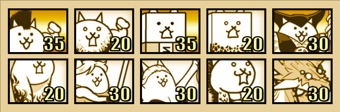

Manic Mohawk
Must-Have Units¶
- Crazed Bahamut Cat - Similarly to Crazed Cat, Crazed Bahamut is a decent backliner for the stage. His long attack cycle allows him to be stacked at the start, although this might not be possible if you are stacking other units
- Some Form of Competent LD / Wave - With the addition of Master A, Crazed Bahamut can no longer snipe the backliners. The most consistent way to take care of them is through long-distance and wave attacks. Examples include Crazed Gross, Medalist Cat, Housewife Cat, Red Riding Mina, etc.
- Spammable Attackers - Dragon Cat, Crazed Dragon, Drama, Surfer, Ring Girl, Bath or any attacker with over 240 works as damage for Manic Mohawk. Cyborg isn’t recommended as she is a cash drain.
- Thaumaturge Cat - Due to Manic Mohawk having much more pushing power than Crazed Cat, it is important to use CC to subdue him. Thaumaturge and 4 meatshields perfectly stall Manic Mohawk.
Great-To-Have Units¶
- Driller Cat - Driller has a 90% weaken towards traitless, allowing him to control Manic Mohawk with ease. As Driller does not have a 100% uptime, the player needs to stack a couple at the start, before hitting base. Make sure that they are not synced Due to their differing weakens, do not use Thaumaturge and Driller together.
- Cyberpunk Cat - Very useful here to CC MMohawk, able to be stacked to great effect, shown here. Make sure to desync them and 4-5 are optimal.
Useful Uber Rare Units¶
- Bahamut Replacements (Generic Backliners) - The player can replace Crazed Bahamut with any Backliner uber, provided they are levelled (Eg. Masamune, Catman, Thundia, Mekako)
- Ubers with Long Distance - Ubers with LD make dealing with the Master As and Teacher Bears much easier, as they can snipe them from a safe range. (Eg. Ganesha, Yoshimoto, Kaslis)
- Anti-Traitless Ubers - As expected, they perform amazing here (Eg. Shadow Gao, Gothic Mitama, Black Zeus, D’arktanyan)
Lineups and Strategies¶
Medalist Stack Strat¶

+Sniper, CPU (Optional)
Video - Courtesy of Definitely Not Mikka
CPU and Sniper are recommended here to stall the boss efficiently.
At the beginning, lure the weak peons to base and stack Medalist or other stackable LD on them. You can initially stall them with a C. Wall/Eraser, but once you have a good stack, try to rely on base HP.
Once your base HP is low or you feel like your stack is large enough, turn on CPU. Once boss wave is triggered, use Cannon soon after to let your Medalist stack survive a bit longer. From here, just be wary of your wallet and spam manually should it get too low.